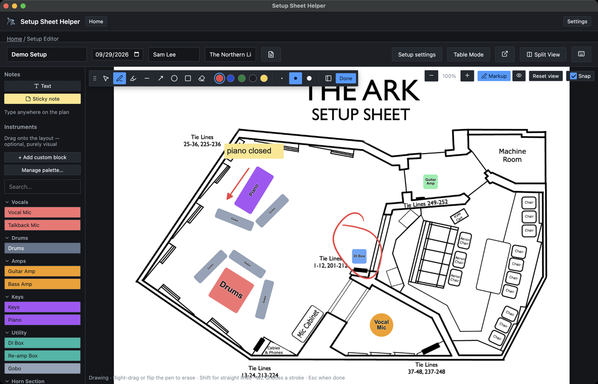
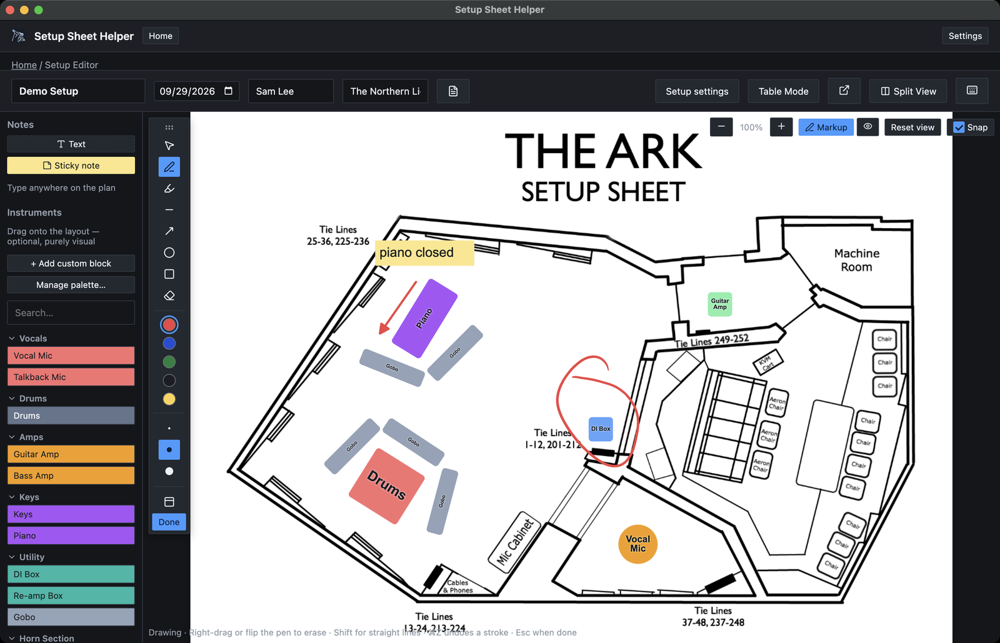

Part 5
Drawing on the plan
Markup lets you draw straight onto the floor plan with a pen, highlighter, lines, arrows and shapes. Circle a problem area, show a cable run, or point at where the talkback mic goes.
Turning markup on
In Layout Mode, click Markup at the top right of the plan, or press ⌘⇧M. The markup toolbar appears over the plan and you can start drawing.
When you're finished, click Done on the toolbar or press Esc. Your marks stay on the plan.

Tools
Click a tool on the toolbar, or press its letter while markup is on.
- Select and move V picks up marks you've already drawn (see Editing marks).
- Pen P draws freehand.
- Highlighter H draws a wide, see-through stroke.
- Line L draws a straight line.
- Arrow A draws a straight line with an arrowhead at the end.
- Ellipse O draws an oval.
- Box R draws a rectangle.
- Eraser E rubs marks out (see Erasing).
The letters only work while markup is on, so they never get in the way of typing elsewhere. You can change them in Settings → Keybinds, under Markup.
Colors and sizes
Pick a color from the five swatches: Red, Blue, Green, Black and Yellow. The three dots next to them set the line size: Thin, Medium and Thick. The app remembers your last tool, color and size.
Pen pressure
With a drawing tablet, the pen responds to pressure: press harder for a thicker line. With a mouse or trackpad, the stroke is shaped by speed instead, so a quick flick comes out thinner than a slow, steady line.
Straight lines, circles and squares
Hold ⇧ while you draw:
- a line or arrow sticks to 45° steps, so it comes out exactly level, upright or diagonal;
- an ellipse becomes a circle, and a box becomes a square.
Staying on the plan
Marks belong to the floor plan, so a stroke has to start on it. If you draw past the edge, the stroke stops at the edge.
Erasing
The eraser rubs out only what it passes over. Drag it through the middle of a pen or highlighter stroke and the stroke splits into two pieces. A line, arrow, ellipse or box is different: touching any part of it erases the whole thing.
There are three ways to erase:
- pick the Eraser tool, or press E;
- hold the right mouse button and drag, whichever tool you have picked;
- turn a tablet pen over and use its eraser end.
Right-dragging is the quickest: draw with the left button, fix mistakes with the right, and never touch the toolbar.
Undo
⌘Z undoes one stroke at a time. A whole eraser pass, from pressing down to letting go, is also one step, so one undo brings back everything that pass rubbed out.
Editing marks
Pick Select and move (V) and click a mark. It gets the same handles as a block:
- drag it to move it;
- drag a corner or side handle to resize it;
- drag the rotate handle to turn it;
- press ⌘⌫ to delete it, with an Undo button in the message that follows.
You don't need to be in markup mode for this. With markup off, marks can be clicked, selected with the rest of the plan, moved and resized just like blocks (see The floor plan).
Moving the toolbar
The toolbar starts docked at the top left of the plan. If it's covering something you want to draw on, move it.
- Drag the grip (the dotted handle at its start) to put the toolbar anywhere over the plan.
- Double-click the grip, or select it and press Return, to dock it again.
- Arrow keys move the toolbar 10 pixels at a time while the grip is selected, or 50 with ⇧.
- The Vertical toolbar button, just before Done, turns the toolbar into a strip down the side of the plan. In that layout the same button reads Horizontal toolbar and turns it back.

The app remembers where you left the toolbar and which way it faces.
Showing and hiding markup
Once the plan has any marks, an eye button appears next to Markup. Click it to hide every mark, and again to show them.
Hidden marks are left out of the PDF and the spreadsheet too, so you can keep working notes on the plan and print a clean copy. Turning markup on shows them again.
Settings → Keybinds has a Show/Hide Markup shortcut with no key until you set one.
How marks print
Marks print exactly as they look on screen, as part of the room layout page. When you export a black-and-white PDF (with Colored turned off), every mark prints dark so it stands out on the gray plan, and the highlighter prints as a gray band. Printing and exporting covers the export options.
Drawing tablets
Markup works with a mouse or trackpad, but a pen tablet makes it feel like drawing on paper.
Pressure works with no setup. Press harder for a thicker pen line.
The eraser end erases whatever tool is picked. Some tablet drivers don't report it; if yours doesn't, use the Eraser tool or E.
A barrel button set to right-click in your tablet's driver erases while you hold it, just like right-dragging with a mouse.
Tool letters can clash with keys your tablet's buttons send. If pressing a tablet button switches tools by mistake, move the letters in Settings → Keybinds, under Markup.